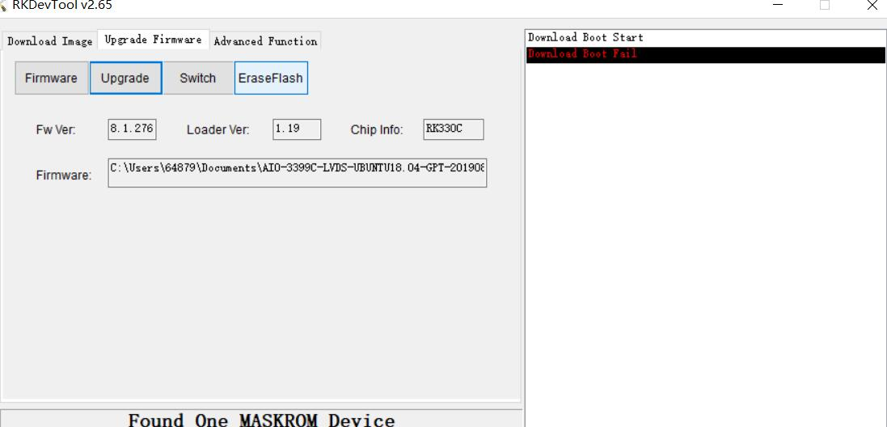

Upgrading firmware on Linux¶
Preface¶
This article describes how to burn the firmware file on the host computer to the flash memory of the ROC-RK3399-PC Pro development board through Type-C data cable. When upgrading, you need to choose an appropriate upgrade method according to the host operating system and firmware type.
Ready to work¶
ROC-RK3399-PC Pro board
firmware
host
Good Type-C data cable data cable
Firmware file¶
There are two types of firmware files:
A single unified firmware
The unified firmware is a single file packaged and merged by all files such as the partition table, bootloader, uboot, kernel, system and so on. The firmware officially released by Firefly adopts a unified firmware format. Upgrading the unified firmware will update the data and partition table of all partitions on the motherboard, and erase all data on the motherboard.
Multiple partition images
That is, files with independent functions, such as partition table, bootloader, and kernel, are generated during the development phase. The independent partition image can only update the specified partition, while keeping other partition data from being destroyed, it will be very convenient to debug during the development process.
Through the unified firmware unpacking / packing tool, the unified firmware can be unpacked into multiple partition images, or multiple partition images can be merged into a unified firmware.
Flash on linux¶
There is no need to install device driver under Linux. Please refer to the Windows section to connect the device.
Note : Different firmware may use different versions of tools, please download the corresponding version according to the upgrade instructions.
upgrade_tool¶
Upgrade_tool¶
Download Linux_Upgrade_Tool (Android8.1 need Linux_Upgrade_Tool_for_android8.1), and install it to host filesystem: Download Linux_Upgrade_Tool, And install it into the system as follows for easy invocation:
unzip Linux_Upgrade_Tool_xxxx.zip
cd Linux_UpgradeTool_xxxx
sudo mv upgrade_tool /usr/local/bin
sudo chown root:root /usr/local/bin/upgrade_tool
sudo chmod a+x /usr/local/bin/upgrade_tool
Upgrade unified firmware - update.img：¶
sudo upgrade_tool uf update.img
If the upgrade fails, try erasing before upgrading. Be sure to erase and upgrade against the table (upgrade_table.md) in upgrade instructions.
# erase flash : Using the ef parameter requires the loader file or the corresponding update.img to be specified.
# update.img :The ubuntu firmware you need to upgrade.
sudo upgrade_tool ef update.img
# upgrade again
sudo upgrade_tool uf update.img
Upgrade Partition image
Android7.1, Android8.1 use the following methods:
sudo upgrade_tool di -b boot.img
sudo upgrade_tool di -k kernel.img
sudo upgrade_tool di -s system.img
sudo upgrade_tool di -r recovery.img
sudo upgrade_tool di -m misc.img
sudo upgrade_tool di -re resource.img
sudo upgrade_tool di -p paramater
sudo upgrade_tool ul bootloader.bin
Android9.0、Android10.0 use the following way:
sudo upgrade_tool di -b boot.img
sudo upgrade_tool di -dtbo dtbo.img
sudo upgrade_tool di -misc misc.img
sudo upgrade_tool di -parameter parameter.txt
sudo upgrade_tool di -r recovery.img
sudo upgrade_tool di -super super.img
sudo upgrade_tool di -trust trust.img
sudo upgrade_tool di -uboot uboot.img
sudo upgrade_tool di -vbmeta vbmeta.img
Ubuntu (GPT) uses the following methods:
sudo upgrade_tool ul $LOADER
sudo upgrade_tool di -p $PARAMETER
sudo upgrade_tool di -uboot $UBOOT
sudo upgrade_tool di -trust $TRUST
sudo upgrade_tool di -boot $BOOT
sudo upgrade_tool di -recovery $RECOVERY
sudo upgrade_tool di -misc $MISC
sudo upgrade_tool di -oem $OEM
sudo upgrade_tool di -userdata $USERDATA
sudo upgrade_tool di -rootfs $ROOTFS
If the upgrade fails due to flash problems, you can try low-level formatting and erase nand flash:
sudo upgrade_tool lf update.img # low-level formatting
sudo upgrade_tool ef update.img # erase
FAQs¶
1. How to forcibly enter MaskRom mode¶
A1 : If the board does not enter Loader mode, you can try to force your way into MaskRom mode. See operation method “How to enter MaskRom mode”.
2. Analysis of programming failure¶
If Download Boot Fail occurs during the programming process, or an error occurs during the programming process, as shown in the figure below, it is usually caused by the poor connection of the USB cable, the inferior cable, or the insufficient drive capability of the USB port of the computer. Troubleshoot the computer USB port.
